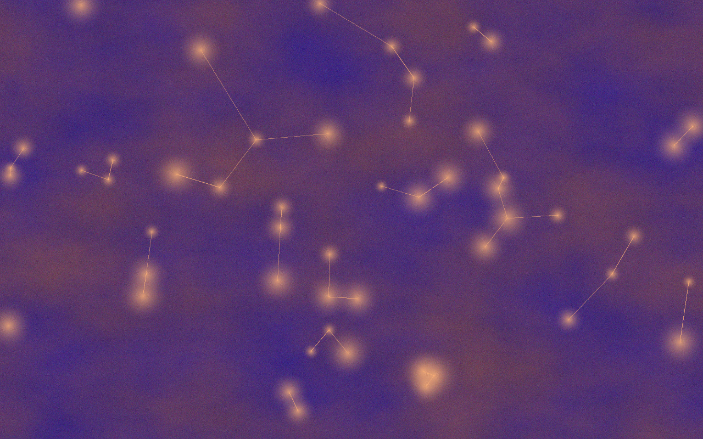

节点详情视图：选中任意一张卡片，右侧展开其内容与关系面板。
第一步：首次启动
- 双击桌面或开始菜单中的 NeoCosmos。首次启动会创建本地仓库（默认位于你的用户文档目录下的
NeoCosmosVault）。
- 无需注册、无需联网。若系统弹出防火墙提示，拒绝其联网权限也完全不影响使用——本应用默认不访问网络。
- 进入主界面后，你会看到一片可旋转的星空画布。中央提示「点击空白处新建节点」。
第二步：建立第一张知识卡片
在空白画布上双击，或按下 N，即可新建一张节点卡片。每张卡片至少包含：
| 字段 | 说明 | 是否必填 |
|---|
| 标题 | 卡片的核心名称，例如「项目Alpha」「客户乙公司」 | 是 |
| 正文 | 任意笔记、摘要、引用或观察记录 | 否 |
| 类型 | 人物 / 组织 / 概念 / 事件 / 文件 等，用于着色与筛选 | 否（默认「概念」） |
| 标签 | 自由文本标签，支持多值，便于后续检索 | 否 |
命名建议：用你将来会搜索的词作标题。关系是本应用的第一公民，标题越「可检索」，星空越有价值。
第三步：连出第一条关系
- 将鼠标悬停在一张卡片上，会出现一个向外的小箭头手柄。
- 按住手柄拖拽到另一张卡片，松开即建立一条有向关系。
- 双击关系连线，可为它命名，例如「汇报给」「引用」「导致」「属于」。
关系即结构：NeoCosmos 不强求你预先分类。先记录，再连关系；关系会自动生长出你的知识拓扑，比文件夹更符合人脑的记忆方式。
第四步：检索与回归
按下 Ctrl + K 唤起全局搜索，输入任意关键词即可在节点标题、正文与标签中即时匹配。选中结果会高亮其在星空中的位置。
第五步：保存与备份
所有改动实时写入本地仓库（无需手动保存）。建议定期把整个 NeoCosmosVault 文件夹复制到移动硬盘或你信任的离线介质。详见 常见问题 → 数据存哪、如何备份。
← 返回帮助首页
下一章：功能详解 →